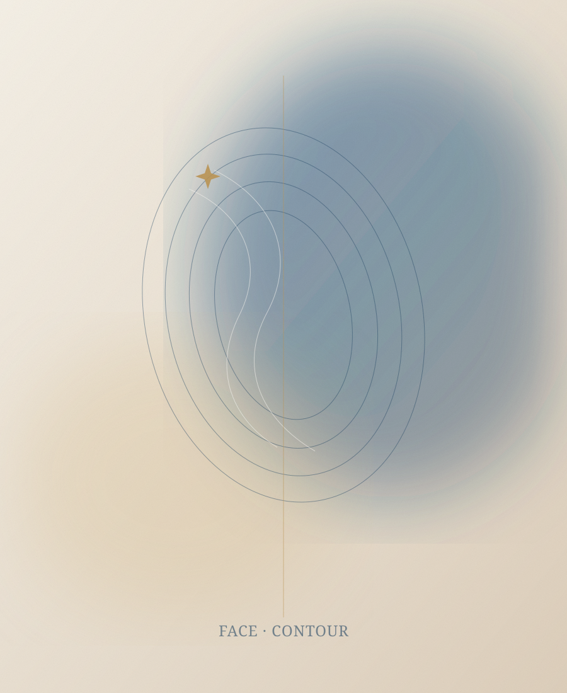

Cosmetic Surgery
الجراحات التجميلية
إجراءات جراحية وغير جراحية تُخطَّط لكل حالة على حدة، بهدف إبراز الملامح الطبيعية بدلاً من محوها، ضمن معايير الأمان والمتابعة.

إجراءات جراحية وغير جراحية تُخطَّط لكل حالة على حدة، بهدف إبراز الملامح الطبيعية بدلاً من محوها، ضمن معايير الأمان والمتابعة.
